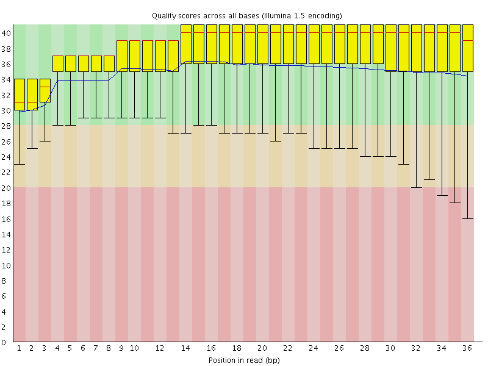
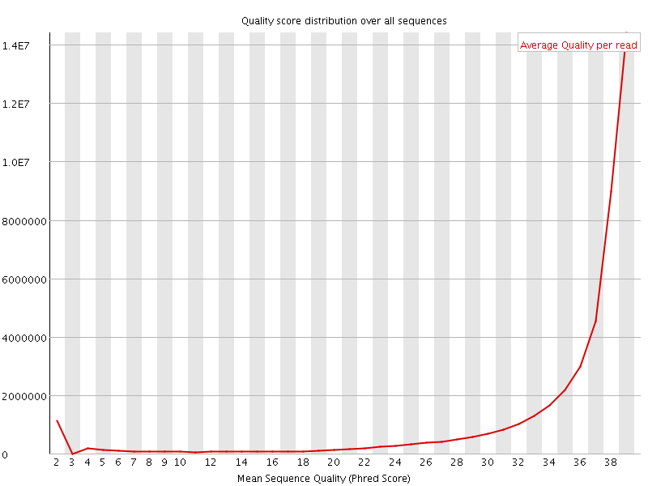
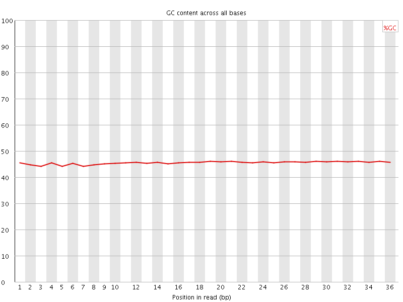
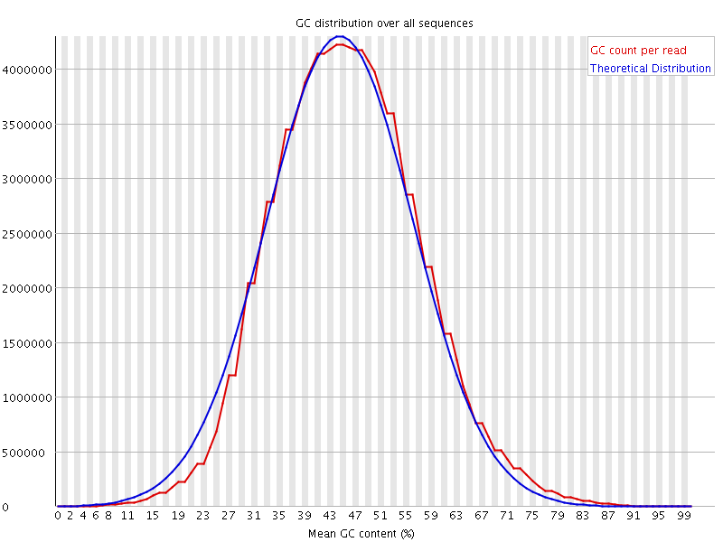
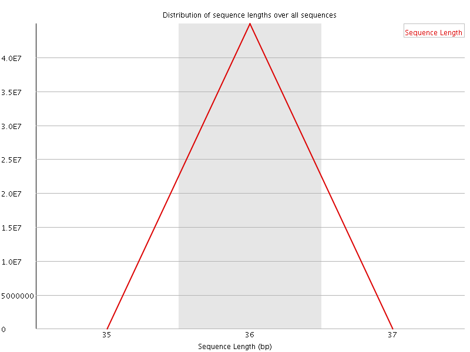
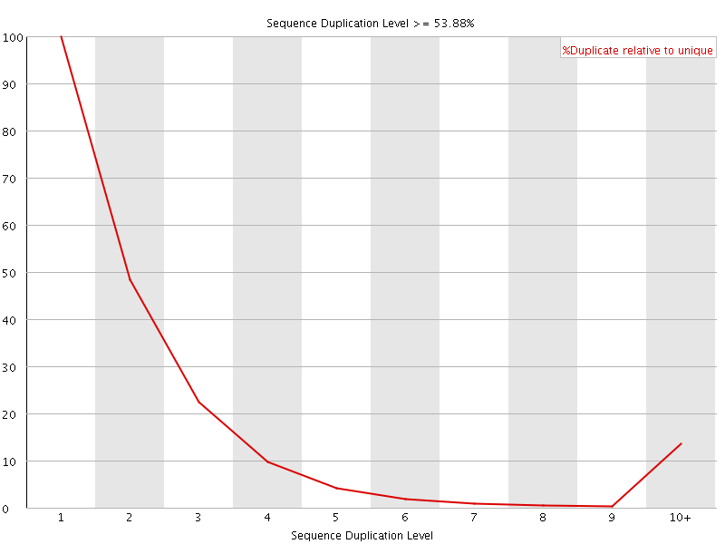
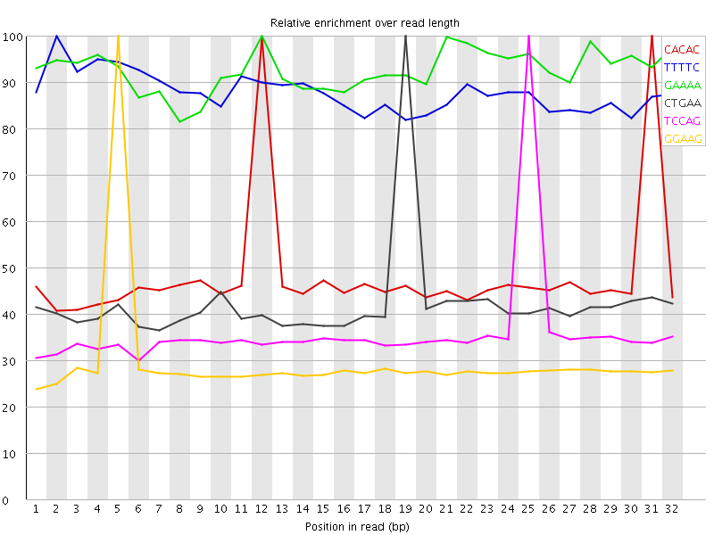

![[OK]](Icons/tick.png) Basic Statistics
Basic Statistics
| Measure | Value |
|---|---|
| Filename | ENCFF001KVH.fastq.gz |
| File type | Conventional base calls |
| Encoding | Illumina 1.5 |
| Total Sequences | 44981145 |
| Filtered Sequences | 0 |
| Sequence length | 36 |
| %GC | 45 |
Per base sequence quality

Per sequence quality scores

Per base sequence content

Per base GC content

Per sequence GC content

Per base N content

Sequence Length Distribution

![[FAIL]](Icons/error.png) Sequence Duplication Levels
Sequence Duplication Levels

![[WARN]](Icons/warning.png) Overrepresented sequences
Overrepresented sequences
| Sequence | Count | Percentage | Possible Source |
|---|---|---|---|
| GATCGGAAGAGCACACGTCTGAACTCCAGTCACACT | 131218 | 0.29171778530759945 | TruSeq Adapter, Index 8 (100% over 36bp) |
Kmer Content

| Sequence | Count | Obs/Exp Overall | Obs/Exp Max | Max Obs/Exp Position |
|---|---|---|---|---|
| CACAC | 4262210 | 3.3651724 | 6.9506545 | 31 |
| TTTTC | 5762315 | 3.3411214 | 3.8015578 | 2 |
| GAAAA | 6168470 | 3.3306947 | 3.5960615 | 12 |
| CTGAA | 3476645 | 2.2942877 | 5.423291 | 19 |
| TCCAG | 2731080 | 2.1689768 | 6.0147867 | 25 |
| GGAAG | 2511110 | 1.926596 | 6.5034432 | 5 |
| CTCCA | 2306395 | 1.8492827 | 5.605046 | 24 |
| GCACA | 2136315 | 1.6706619 | 5.3964143 | 11 |
| GAAGA | 2514695 | 1.6185513 | 5.4844284 | 6 |
| AAGAG | 2414610 | 1.554133 | 5.374261 | 7 |
| AGAGC | 1972610 | 1.5279716 | 6.1222653 | 8 |
| GAGCA | 1876040 | 1.4531692 | 5.18117 | 9 |
| CCAGT | 1744795 | 1.3856862 | 5.0712996 | 26 |
| GTCTG | 1730770 | 1.3826358 | 5.05709 | 17 |
| AGCAC | 1754600 | 1.3721493 | 5.127199 | 10 |
| CGGAA | 873490 | 0.67660004 | 5.2096777 | 4 |
| TCGGA | 473880 | 0.3727689 | 5.0027866 | 3 |